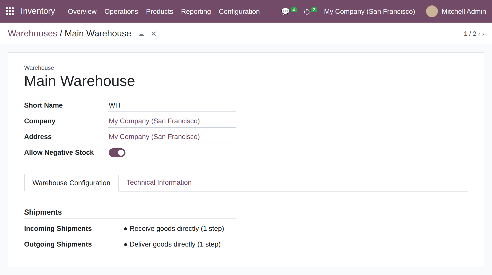
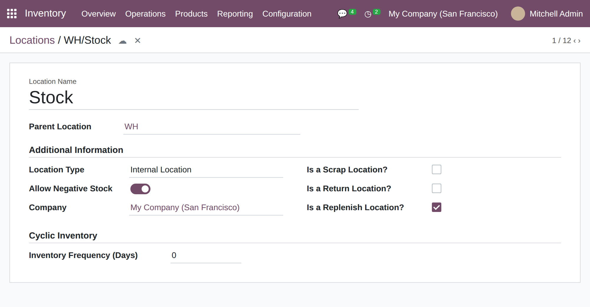
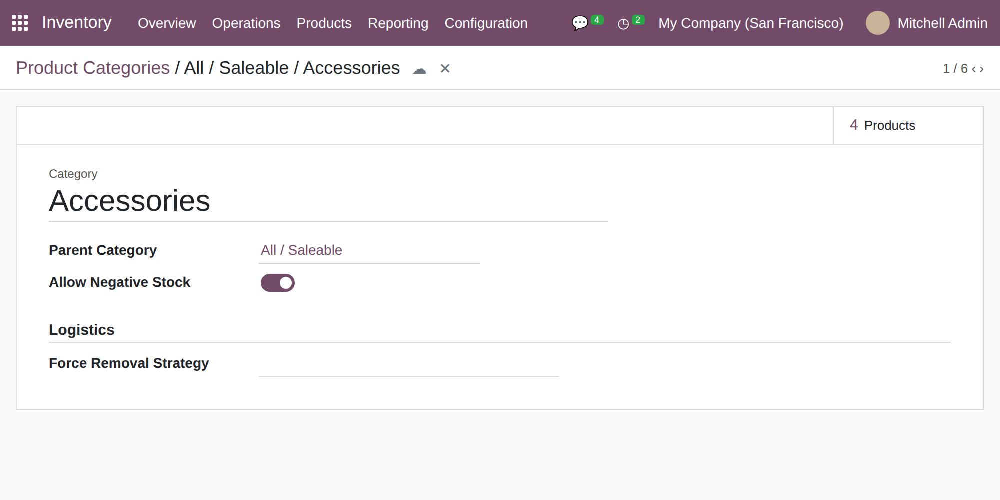
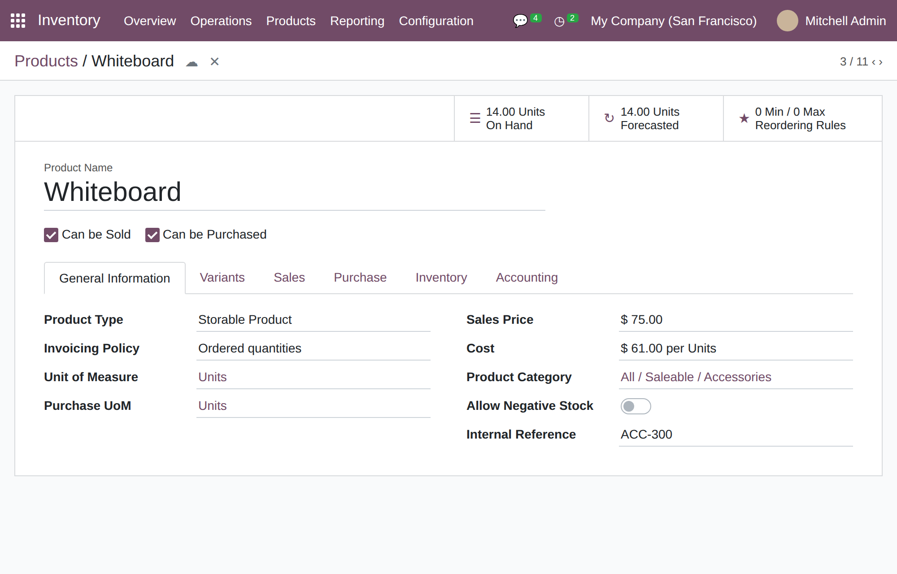
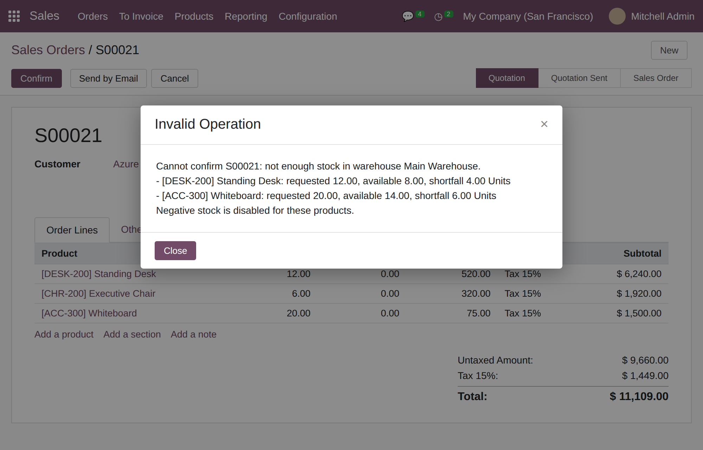
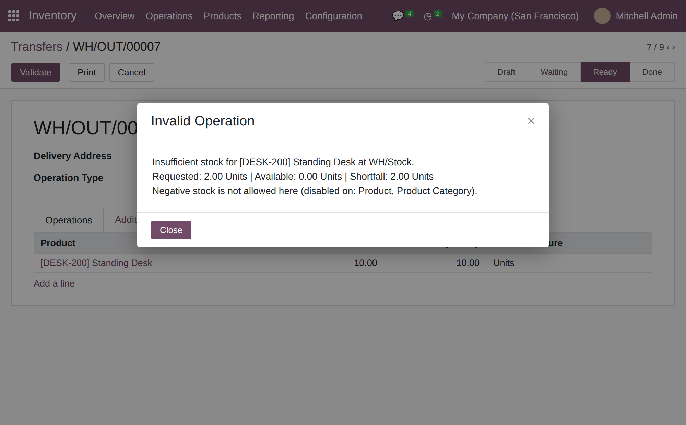
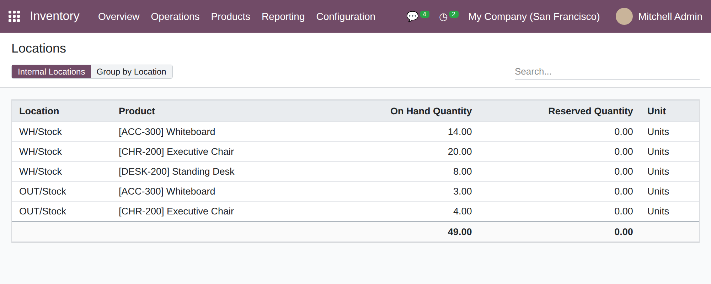
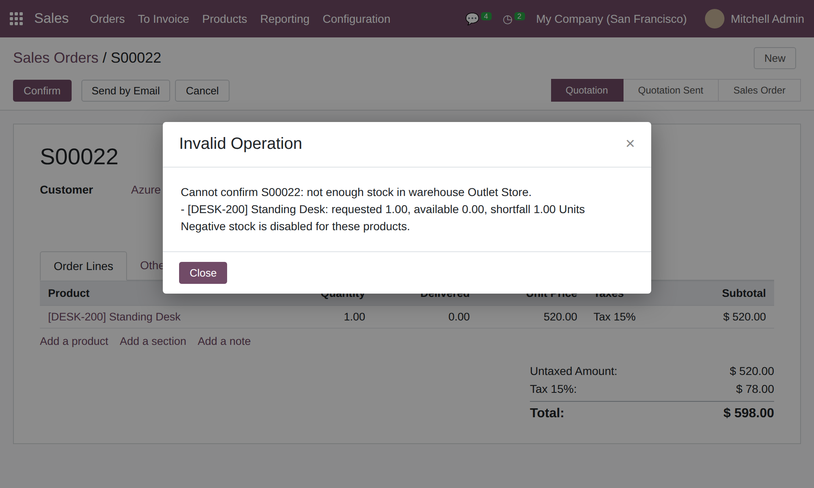
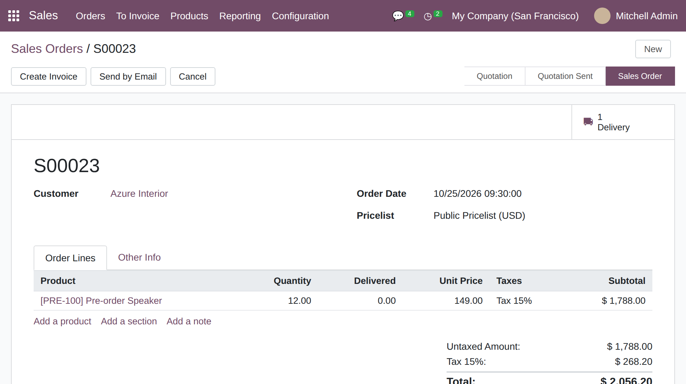

Never sell or ship what is not on the shelf. A negative-stock switch on the warehouse, the location, the product category and the product decides, for every product and location, whether stock may go below zero. Orders are checked when confirmed, every stock move is checked when it is done, and the check runs under a database row lock.
In Odoo 17, stock can silently go below zero whenever a transfer is validated with more quantity than is on hand. That is convenient for some products and a data-quality problem for others. You need to decide product by product and place by place, and you need a clear message at the moment of sale rather than a negative quant discovered at stock-take.
The screenshots follow one demo scenario: a US-dollar company with two warehouses, Main Warehouse (WH) and Outlet Store (OUT). Main Warehouse holds 8 Standing Desks, 20 Executive Chairs and 14 Whiteboards; the Outlet holds 4 Executive Chairs and 3 Whiteboards and no desks. The Pre-order Speaker has no stock and Allow Negative Stock switched on at every level.
Open Inventory › Configuration › Warehouses. Allow Negative Stock is a toggle under the address and applies to every location that belongs to the warehouse. It is off by default.

The same switch on Inventory › Configuration › Locations lets you open a single place, for example a staging or pre-order shelf, while the rest of the warehouse stays strict. It is shown for internal locations only.

On the Product Category form the switch covers every product of the category. Use it for families that are routinely sold ahead of receipt.

The product form has the final say. It is shown for storable products, next to the product category. Here the Whiteboard keeps it off even though its category allows negative stock.

The lowest Off level wins over every On level above it, and the error message lists exactly which levels are Off. The result for each product and location is cached and refreshed automatically when a switch, a product category or a location’s parent changes, so the lookup costs almost nothing on large databases.
| Product at location | Product | Category | Location | Warehouse | Result |
|---|---|---|---|---|---|
| Pre-order Speaker at WH/Stock | On | On | On | On | Negative stock allowed |
| Whiteboard at WH/Stock | Off | On | On | On | Blocked: the product overrides its category |
| Standing Desk at WH/Stock | Off | Off | On | On | Blocked: product and category are Off |
| Executive Chair at OUT/Stock | On | On | Off | On | Blocked here: the location overrides the others |
Confirming a quotation totals the demand per product over all its lines (in the product unit of measure) and compares it with the free stock (on hand minus reserved) of the order’s warehouse. If anything is short, nothing is confirmed and the message lists every short product with its requested, available and missing quantity. The Executive Chair line is fine, so it is not listed.

Orders are not the only way stock leaves. When a transfer is validated, each quantity leaving an internal location is checked as it is booked. The delivery below has 8 desks reserved and a picked quantity of 10, so the extra 2 would create negative stock and the validation is refused with the exact shortfall. The same guard covers immediate transfers, manual moves and any other module that books stock.

Stock in one warehouse never covers a sale from another. Standing Desks exist only in Main Warehouse, so an order for the Outlet Store is refused even though 8 desks are available company-wide. Free stock is counted over the internal locations of the order’s warehouse only, and the warehouse switch applies only to its own locations.


When every level is On, nothing is checked and nothing is blocked: the order is confirmed, the delivery is created and stock may go negative on delivery, exactly as in standard Odoo. This order for the pre-order item is confirmed with no stock on hand.

Locks are taken in a fixed order (by record id), which keeps deadlocks rare; PostgreSQL still detects and aborts a real deadlock, and Odoo retries the request. The automated test starts eight real database connections at once, each trying to ship 3 units out of 10, and asserts that exactly three succeed, five are blocked and the stock ends at 1, never below zero.
| Step | What the module does |
|---|---|
| 1. Lock | Runs SELECT id FROM stock_quant … ORDER BY id FOR UPDATE on the quants of the product and location (or warehouse, for sale orders). Other transactions wait. |
| 2. Check | Reads the quantity and compares it with the request. Below zero with negative stock disabled: a clear UserError, nothing is written. |
| 3. Book | Books the move. The lock is held until commit, so the next user sees the new quantity. |
| 4. Retry | If a locked row was changed by another transaction, PostgreSQL raises a serialization failure and Odoo retries the request automatically. The retried request then sees the real quantity. |
The guard only looks at moves that take storable products out of an internal location.
| Who | Effect |
|---|---|
| Everyone who confirms orders or validates transfers | The checks apply to everybody, whatever their rights. Reading the configuration for the check is done with elevated rights. |
| Users who can edit warehouses, locations, categories and products | They can change the switches, with the standard access rights of each form. The module adds no group and no access rule of its own. |
| Multi-company users | Free stock is counted only on the locations of the order’s company. |
| Odoo version | 17.0, Community and Enterprise |
| Depends on | stock, sale_stock |
| New field | allow_negative_stock (Boolean, default False) on stock.warehouse, stock.location, product.category and product.template |
| New models | stock.negative.policy (resolution engine, cached) and stock.negative.mixin (field and cache invalidation), both abstract |
| Overridden methods | stock.quant._update_available_quantity (move guard with row lock) and sale.order.action_confirm (order check) |
| Extension hook | sale.order.line._negative_stock_must_check() decides which lines are checked at confirmation |
| Automated tests | 15 tests: default and combined levels, each level overriding the others, cache refresh, quant guard and error message, exact consumption, order confirmation (short, enough, aggregated lines, allowed), multi-warehouse isolation, picking validation, and a concurrent race with eight real database connections |
| Run the tests | odoo -d testdb -i stock_no_negative_enforcer --test-tags stock_no_negative --stop-after-init on a throw-away database (the race test commits and then removes its own data) |
| Not compatible with | The OCA module stock_no_negative: both define allow_negative_stock on the same models, so install only one of them |
| License | LGPL-3 |
Questions, a demo, or negative-stock rules adapted to your own process? Get in touch.
✉ ibrahim.yahiah@gmail.com LinkedIn: Ibrahim YahiaAuthor: Ibrahim Yahia · License: LGPL-3